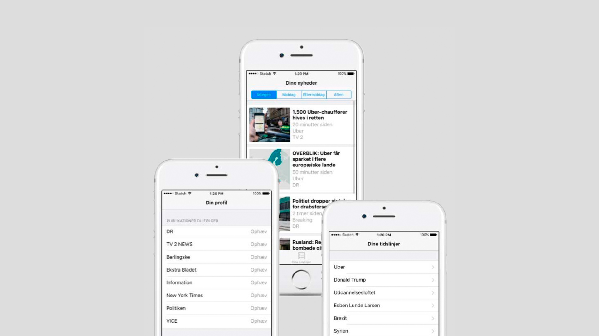
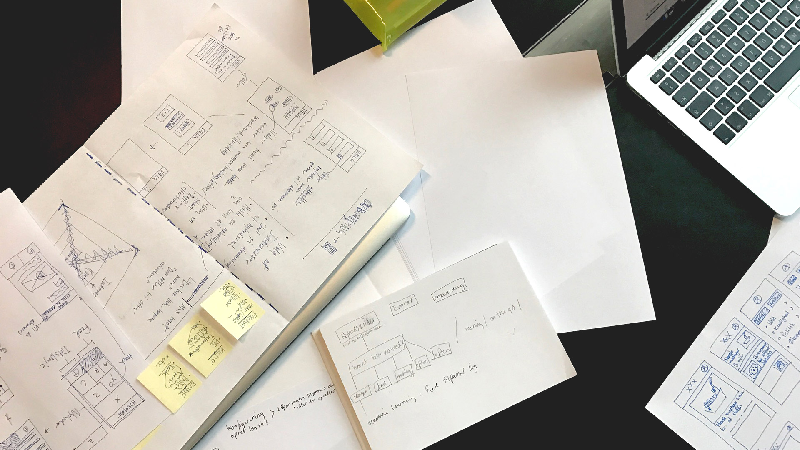

News and information is a complex topic especially in a digital, connected universe, where exactly news and media plays a central role in terms of democracy by making information available to the citezens. In other words does information not exist, only informed people.
Another – but very important – challenge was how we as designers would “frame” the problem, where framing of a problem will ultimately also form the design solution.
Contextual news app: Informed
Year: Spring 2017
Academic work: Group based project and concept
My role: Design research, sketching and prototyping, framing
Informed is a context based news aggregator – a concept of an app. Informed continuously adapts it’s users habits in terms of news consumption. It collects data about the usage of itself – when and where does the user wants this type of news; in what format and from what news source. An algorithm. The user can also “follow” a news flow across news sources. Furthermore, Informed will push different perspectives that will challenge the user’s news consumption and break filter bubbles.

Challenge
Process
Through utilizing Design Thinking we approach this topic human centered. It’s about getting to know these peoples lives, their feelings and habits – user, empathy, context. We went through defining and framing design principles, ideate, brainstorm, prototype and test in an iterative process. This ultimately let us to the concept of Informed through a high fidelity prototype made in Sketch and Marvel. This project also let us into a greater discussion about the designer's responisiblity towards designing futures.

Learnings
Design Thinking right away is not always the way to solve big complex problems even though it’s hyped as such. Because, here Design Thinking taught us to favor the user’s feelings, interests, and wishes: The buttom line is about creating value for people. But, focusing on a bigger, cultural ethical, and societal responsibility towards a well-informed society, the designer has a responsibility in reflecting this within the solution, where people's needs not always reflect this responsibility. The designer is driving the process and making the choices, and should therefore withhold this responisbility. This is an important discussion we, designers, must take when we create futures – what is the impact.